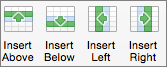
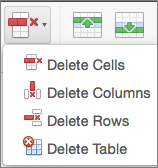

You can add a row above or below the cursor position.
Click where you want in your table to add a row or column and then click the Layout tab (this is the tab next to the Table Design tab on the ribbon).
To add rows, click Insert Above or Insert Below and to add columns, click Insert Left or Insert Right.
Tip: To add a row at the end of a table, click the last cell of the last row, and then press the TAB key.
Click a row or cell in the table, and then click the Layout tab (this is the tab next to the Table Design tab on the ribbon).
Click Delete, and then click the option your need in the menu.
Note: The option to delete the table on the Delete menu is only in Word. If you want to delete a table in PowerPoint, select and delete it.
